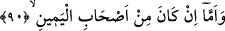
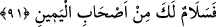
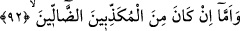

90. Eğer o sağdakilerden ise,
Hayırda önde olan sâbikûn, en önemli vasıfları bu olduğu için mukarrabûn
kelimesiyle ifâde buyrulmuştur. Sağdakiler anlamındaki eshâbu’l-yemîn kelimesinin
yerine, kendinden başka bir kelime kullanılmamıştır. Çünkü, diğer iki topluluk hakkında
zikredildiği gibi, daha önce onların durumunu anlatan bu vasıftan başka bir nitelik
zikredilmemiştir. Âyet-i kerîmede geçen yemin kelimesi bereket, nimet ve mutluluk
mânâsında istiare olarak kullanılmıştır. Rağıb da aynı görüşü belirtmiştir.
91. «Ey sağdaki! Sana selam olsun!»
“Ey sağdakiler! Sana” sağdaki kardeşlerinden “selam olsun.” Sana ölürken ve
ondan sonra selam ederler. Dolayısıyla bu selam, ölmekte olan kimsenin cennetlik
olduğuna bir işârettir.
İrşad’da belirtildiğine göre bu ifâde, onların bir kısmının bir kısmına selam
verdiğinin Allah tarafından haber verilmesidir. Mef’ûlu leh’in lamı da bunu açıkça
göstermektedir. Çünkü, onların birbirine selam verdikleri inşa cümlesi hâlinde haber
verilmiştir. Gaibden muhatap zamire geçmek suretiyle ashâb-ı yeminin her birine ayrı
ayrı hitap etmesi, onlara büyük değer verdiğindendir.
Sehl (r.a.) demiştir ki: Âyet-i kerîmede sözü edilen sağdakiler, Allah’ın birliğine
inananlardır. Sonunda onlar selamet ve esenliğe kavuşacaklardır. Çünkü onlar Allah’ın
emin, güvenlik içinde olan, güvenilir kullarıdır. Onlar, emâneti yerine getirmişlerdir.
Allah’ın emir ve nehiylerine riayet etmişler, hata ve isyanların hepsinden uzak
durmuşlardır. Onlar, başkalarının maruz kalacakları bir takım tehlikeler ve korkulardan
güven içindedirler. Gerçekten, Arş-ı ilâhi yakınları, Allah’ın yüce zâtını her zaman
gören, şühûd eshabı bahtiyarlardır. Sağda olanlar ise ilahi isimleri ve sıfatları seyre
dalmış olan şühûd eshâbıdır. Onlardan her bir bahtiyara kardeşinin diliyle Selâm ism-i
şerifinin sahibi Allah’ın selamı vardır.
Allah Teâlâdan hepimiz için esenlik, gerçek kurtuluş, en yüce makamlarda ve
derecelerde ünsiyet, huzur, Zât-ı ilâhiyi seyretme ve şuhud ihsân etmesini dilerim.
92. Ama yalanlayıcı sapıklardan ise,